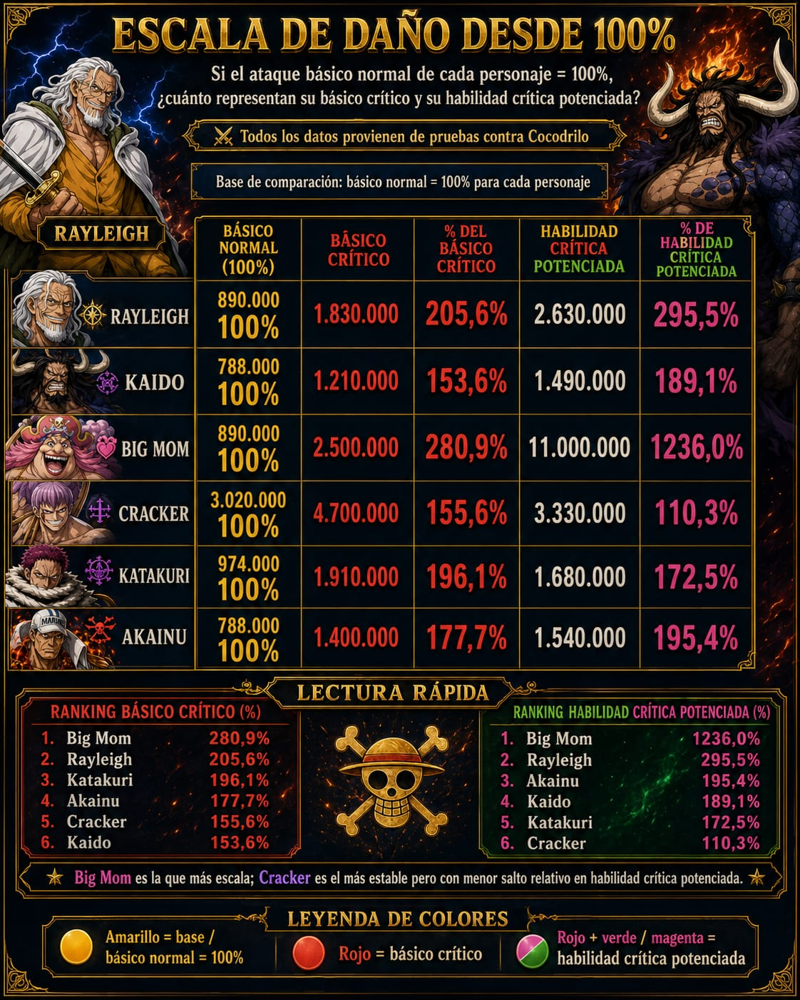

Big Mom
Es la opción que más destaca en las pruebas: su básico crítico ya escala fuerte y su habilidad crítica potenciada aparece muy por encima del resto.
Laboratorio de daño
Esta vista guarda comparativas hechas con pruebas del juego. Los valores sirven para leer tendencias, no como una tier list fija: cambian según items, diales, talentos, awaken, buffs, nivel, formación y enemigo.
Lectura rápida
Es la opción que más destaca en las pruebas: su básico crítico ya escala fuerte y su habilidad crítica potenciada aparece muy por encima del resto.
Tiene muy buen crecimiento con críticos y buffs. En la comparación contra Kaido se ve más explosivo para daño crítico.
Los dos quedan casi empatados en productividad máxima. Katakuri gana en básico crítico; Akainu se sostiene bien por daño multi-hit.
Muestra daño base alto y crecimiento más estable. Puede ser buena pareja cuando se busca consistencia junto a un carry explosivo.
Escala general
La base de comparación es el ataque básico normal de cada personaje como 100%. En este ejemplo, Big Mom sobresale especialmente: 280,9% en básico crítico y 1236,0% en habilidad crítica potenciada.

Dúos


Cómo usarlo
| Situación | Buena opción | Motivo |
|---|---|---|
| Buscar pico de daño | Big Mom | Su habilidad crítica potenciada escala muchísimo en las pruebas guardadas. |
| Daño crítico consistente | Rayleigh | Convierte bien los críticos y mejora con buffs sin depender de un único salto extremo. |
| Comparar daño por ráfagas | Katakuri / Akainu | Conviene sumar todos los hits; Akainu puede lucir mejor cuando su multi-hit completa. |
| Base alta y estabilidad | Cracker / Kaido | Menor salto relativo, pero pueden sostener daño según items y buffs disponibles. |